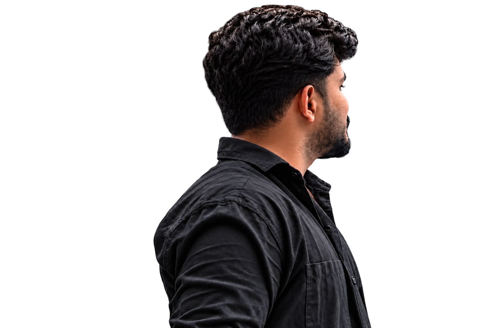
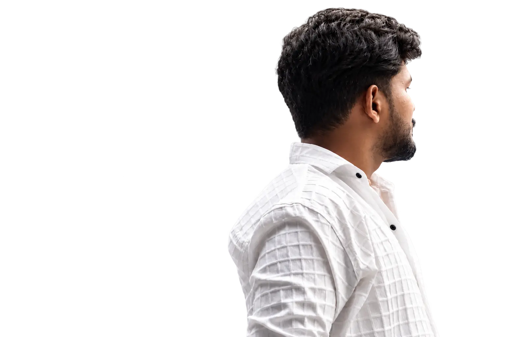

A developer who looks beyond the visible page.
From the interface to search, performance, and the systems underneath it, I build web work that is designed to keep improving.


Hi, I’m Depakar.
I’m a WordPress Developer focused on building fast, scalable, and search-ready digital experiences.
My work sits at the intersection of WordPress development, plugin engineering, technical SEO, AEO, GEO, performance, and analytics. I enjoy taking an idea, design, or business requirement and turning it into a reliable product that works well for both people and search engines.
Since starting my web-development journey in July 2024, I’ve worked across business websites, learning platforms, compliance solutions, custom WordPress systems, AMP experiences, integrations, and production environments.
Today, I work as a WordPress Developer at Succeed Technologies, contributing to platforms such as SucceedLEARN, eLearnPOSH, SCROMBridge, and other internal and customer-facing systems.
Good work starts by understanding the real problem.
Understand first
Business goals, users, existing technology, and the actual problem guide the work.
Build with purpose
I prefer practical solutions over unnecessary complexity, whether it is a feature, plugin, integration, or performance fix.
Test before shipping
Responsive behaviour, forms, integrations, tracking, and production checks are part of the job.
Measure and improve
Launch is the beginning of learning. Technical health, search, and user behaviour show what should improve next.
Curiosity is part of the stack.
WordPress is where I’ve built most of my professional experience, but it is not where my curiosity stops. I’m growing toward complete, measurable digital products.